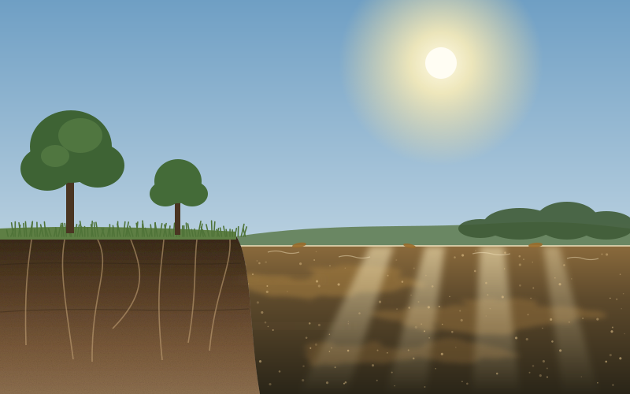
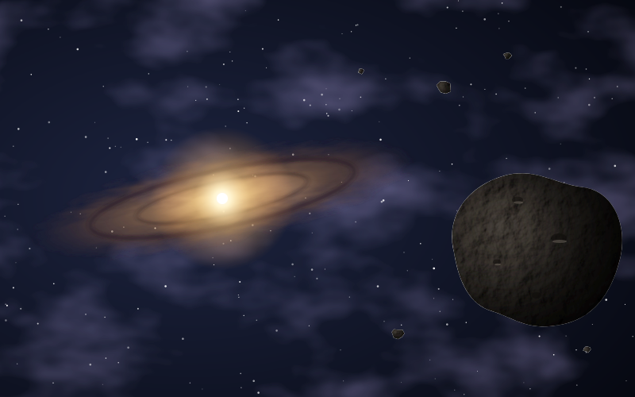

NSF Postdoctoral Fellow · Harvard University
Daniel R. Crocker
I use stable isotope geochemistry to investigate the origins, transformations, and fate of organic matter across terrestrial and extraterrestrial environments.

Research Program
One isotope framework, three connected directions
My work uses triple oxygen isotope systematics as a common analytical framework for investigating chemical origins, transformations, and transport across planetary, environmental, and atmospheric systems.

Atmospheric Organic Aerosol Chemistry
Using isotope signatures to constrain oxidant-specific pathways in organic aerosol formation and atmospheric processing.

Aquatic & Terrestrial Carbon Cycling
Tracing oxidation and transformation pathways that reshape natural organic matter across soils, waters, and environmental interfaces.

Early Solar System Organic Matter
Reconstructing the formation, distribution, and alteration of meteoritic organic matter using triple oxygen isotope systematics.